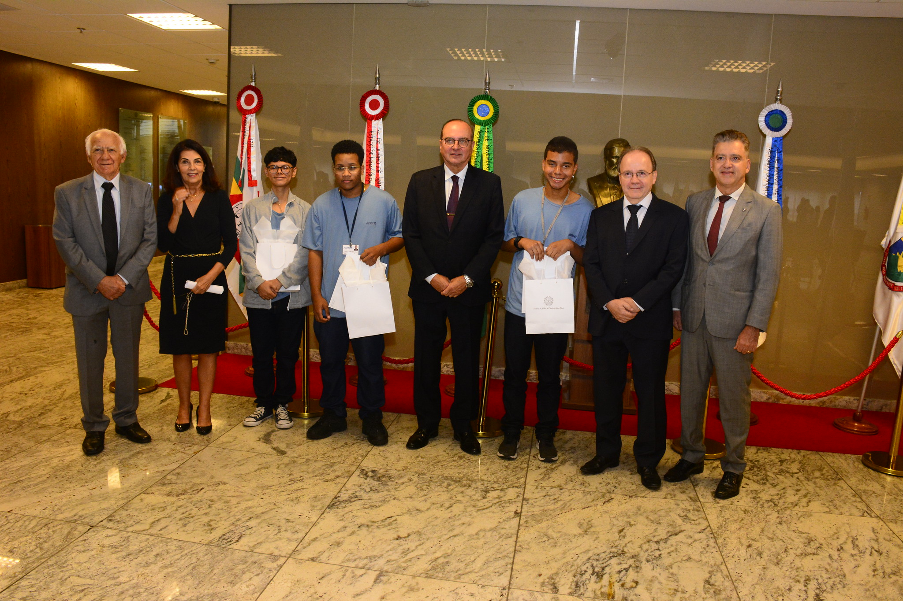

Gabriel Gonçalves Macedo Lima
Currículo
push_pin
● Nome: Gabriel Gonçalves Macedo Lima, desenvolvedor web;● Data de Nascimento: 15/10/2005 (17 anos);● Lugares Onde Trabalhei: pin_drop ● Tecnologias que eu domino: Python para web com bottle.pyhelp ,
HTMLhelp ,
CSShelp ,
JShelp ;● Línguas: Portugês Brasileiro (Fluente); Inglês (Básico);● Formação Acadêmica: Ensino Fundamental Completo; Ensino Médio Incompleto;● Telefone e Whatsapp de contato: +55 (31) 99141-5877 ;● Emails de contato: gabriel@gablima.com.br e fiuzagabri@gmail.com
info
Olá, queridos leitores! Eu me chamo Gabriel Gonçalves Macedo Lima e atualmente, em 2022, tenho 17 anos de idade. Nasci em 15 de outubro de 2005, em uma família humilde, mas com sede de trabalho. Sou um jovem esforçado e em busca de conhecimento.
Eu sou de descendência humilde, quando eu era pequeno eu morava em um “barracão” com minha mãe e minha avó. Minha genitora sempre foi batalhadora e esforçada, passava a maior parte do tempo para conseguir dinheiro para me sustentar. Enquanto isso minha avó cuidava de mim. Entretudo atualmente, eu, meu pai, minha mãe e meu irmão Gustavo, vivemos em melhores condições de vida.
Sempre fui esforçado, na escola sempre busquei obter desempenhos acima da média. Constantemente procuro fazer meus trabalhos com excelência, qualidade e perfeição, quando não é possível faço da melhor maneira possível.
business_center
A vara cível da Infância e Juventude foi o lugar onde tive minha primeira oportunidade de emprego, como office boy. Lá trabalhei pela empresa terceirizada: Assprom , entre fevereiro de 2022 a fevereiro de 2024.
Foi durante esse período que eu ganhei o 17º concurso artístico dos jovens trabalhadores da Assprom.
Por eu ter feito uma das três melhores redações do concurso, tive a oportunidade de tirar uma fotografia com o Presidente do TJMG.

Na foto se encontram(sentido esquerda para a direita):
school
Devido ao fato de que eu sou menor de dezoito anos e estar cursando o ensino médio, não tenho ensino superior.
psychology
Em matéria de habilidades meu foco é na tecnologia. Eu consigo desenvolver uma aplicação web do absoluto zero, porém não sei integrá-la com um banco de dados. Sendo assim uso arquivos json para armzenar dados.
rocket_launch
Por ainda ser jovem vejo meu futuro incerto, porém eu pretendo me formar em direito e ocupar algum cargo no funcionalismo público, ou me formar em Análise e Desenvolvimento de Sistemas. Não tenho perspectivas de ter filhos ou me casar. Quero trilhar meu próprio caminho e depender somente de mim.